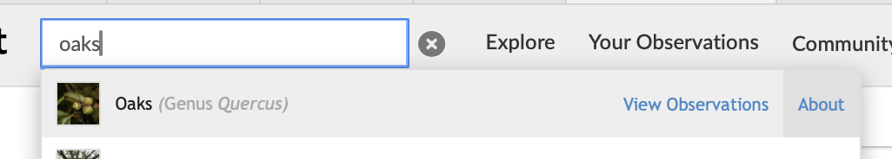
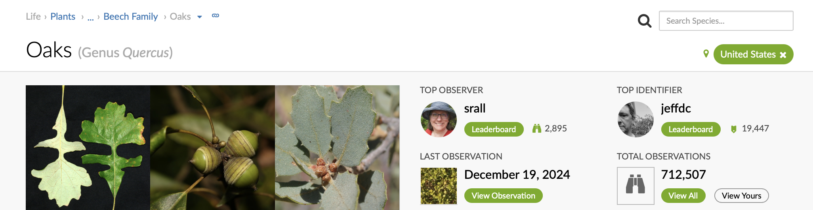
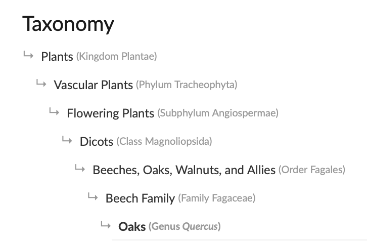

library(readr) # read and write tabular data
library(dplyr) # manipulate data
library(lubridate) # manipulate datesWorking with iNaturalist data
Questions
- How do you work with iNaturalist CSV data in R?
Objectives
- Import CSV data into R.
- Select rows and columns of data.frames.
- Use pipes to link steps together into pipelines.
- Create new data.frame columns using existing columns.
- Export data to a CSV file.
Importing iNaturalist data
A CSV of iNaturalist observations for City Nature Challenge Los Angeles from 2015 to 2024 is located at “data/cleaned/cnc-los-angeles-observations.csv”. We are going to read that CSV using R.
Reading a file
In order to analyze the iNaturalist csv, we need to load readr, lubridate and dplyr packages.
We will use the read_csv() function from readr package to read the iNaturalist CSV. We will pass in a relative path to the CSV file as an argument for read_csv().
read_csv() will return the content of the file. In order for us access the data later on, we need to assign the content to an object called inat_data. Objects are displayed in the Environment panel. Double click on inat_data in Environment to see all the data.
inat_data <- read_csv('data/cleaned/cnc-los-angeles-observations.csv')
Tip
Typing out paths can be error prone, so we can utilize a keyboard shortcut. Inside the parentheses of read_csv(), type out a pair of quotes and put your cursor between them. Then hit Tab. A small menu showing your folders and files should show up. You can use the ↑ and ↓ keys to move through the options, or start typing to narrow them down. You can hit Enter to select a file or folder, and hit Tab again to continue building the file path. This might take a bit of getting used to, but once you get the hang of it, it will speed up writing file paths and reduce the number of mistakes you make.
To learn more about a function, you can type a ? in front of the name of the function, which will bring up the official documentation for that function:
?read_csvFunction documentation is written by the authors of the functions, so they can vary pretty widely in their style and readability. The first section, Description, gives you a concise description of what the function does, but it may not always be enough. The Arguments section defines all the arguments for the function and is usually worth reading thoroughly. Finally, the Examples section at the end will often have some helpful examples that you can run to get a sense of what the function is doing.
The data.frame
read_csv returns a data.frame. A data.frame is the most common way that R represents tabular data (data with rows and columns).
We can view the first few rows with the head() function from R, and the last few rows with the tail() function from R:
head(inat_data)# A tibble: 6 × 37
id observed_on time_observed_at user_id user_login user_name created_at
<dbl> <date> <chr> <dbl> <chr> <chr> <chr>
1 2931940 2016-04-14 2016-04-14 19:25:… 151043 msmorales Michael … 2016-04-1…
2 2934641 2016-04-14 2016-04-14 19:02:… 10814 smartrf Richard … 2016-04-1…
3 2934961 2016-04-14 2016-04-14 19:15:… 80445 cdegroof Chris De… 2016-04-1…
4 2934980 2016-04-14 2016-04-14 19:18:… 80445 cdegroof Chris De… 2016-04-1…
5 2934994 2016-04-14 2016-04-14 19:19:… 80445 cdegroof Chris De… 2016-04-1…
6 2935037 2016-04-14 2016-04-14 19:36:… 121033 ttempel <NA> 2016-04-1…
# ℹ 30 more variables: updated_at <chr>, quality_grade <chr>, license <chr>,
# url <chr>, image_url <chr>, sound_url <chr>, tag_list <chr>,
# description <chr>, captive_cultivated <lgl>, latitude <dbl>,
# longitude <dbl>, positional_accuracy <dbl>,
# public_positional_accuracy <dbl>, geoprivacy <chr>, taxon_geoprivacy <chr>,
# coordinates_obscured <lgl>, scientific_name <chr>, common_name <chr>,
# iconic_taxon_name <chr>, taxon_id <dbl>, taxon_kingdom_name <chr>, …tail(inat_data)# A tibble: 6 × 37
id observed_on time_observed_at user_id user_login user_name created_at
<dbl> <date> <chr> <dbl> <chr> <chr> <chr>
1 254128969 2024-04-28 2024-04-28 17:1… 2834615 thannavic… Thanna V… 2024-12-0…
2 255041807 2024-04-26 2024-04-26 23:3… 5347031 epiphyte78 <NA> 2024-12-1…
3 255041881 2024-04-26 2024-04-26 22:1… 5347031 epiphyte78 <NA> 2024-12-1…
4 255041985 2024-04-26 2024-04-26 22:1… 5347031 epiphyte78 <NA> 2024-12-1…
5 255042063 2024-04-26 2024-04-26 20:4… 5347031 epiphyte78 <NA> 2024-12-1…
6 255042124 2024-04-26 2024-04-26 19:1… 5347031 epiphyte78 <NA> 2024-12-1…
# ℹ 30 more variables: updated_at <chr>, quality_grade <chr>, license <chr>,
# url <chr>, image_url <chr>, sound_url <chr>, tag_list <chr>,
# description <chr>, captive_cultivated <lgl>, latitude <dbl>,
# longitude <dbl>, positional_accuracy <dbl>,
# public_positional_accuracy <dbl>, geoprivacy <chr>, taxon_geoprivacy <chr>,
# coordinates_obscured <lgl>, scientific_name <chr>, common_name <chr>,
# iconic_taxon_name <chr>, taxon_id <dbl>, taxon_kingdom_name <chr>, …Use glimpse() from dplyr to see a information about a data frame. Number of rows and columns. For each column, we see the name, data type (dbl for number, chr for character, lgl for logical (true, false), date for date), and the first few values.
glimpse(inat_data)Rows: 191,638
Columns: 37
$ id <dbl> 2931940, 2934641, 2934961, 2934980, 2934994…
$ observed_on <date> 2016-04-14, 2016-04-14, 2016-04-14, 2016-0…
$ time_observed_at <chr> "2016-04-14 19:25:00 UTC", "2016-04-14 19:0…
$ user_id <dbl> 151043, 10814, 80445, 80445, 80445, 121033,…
$ user_login <chr> "msmorales", "smartrf", "cdegroof", "cdegro…
$ user_name <chr> "Michael Morales", "Richard Smart (he, him)…
$ created_at <chr> "2016-04-14 07:28:36 UTC", "2016-04-14 19:0…
$ updated_at <chr> "2021-12-26 06:58:04 UTC", "2018-05-28 02:0…
$ quality_grade <chr> "research", "needs_id", "research", "resear…
$ license <chr> "CC-BY", "CC-BY-NC", NA, NA, NA, "CC-BY-NC"…
$ url <chr> "http://www.inaturalist.org/observations/29…
$ image_url <chr> "https://inaturalist-open-data.s3.amazonaws…
$ sound_url <chr> NA, NA, NA, NA, NA, NA, NA, NA, NA, NA, NA,…
$ tag_list <chr> NA, NA, NA, NA, NA, NA, NA, NA, NA, NA, NA,…
$ description <chr> "Spotted on a the wall of a planter, while …
$ captive_cultivated <lgl> FALSE, FALSE, FALSE, FALSE, FALSE, FALSE, F…
$ latitude <dbl> 34.05829, 34.01742, 34.13020, 34.13143, 34.…
$ longitude <dbl> -117.8219, -118.2892, -118.8226, -118.8215,…
$ positional_accuracy <dbl> 4, 5, NA, NA, NA, NA, 17, 55, 55, 55, NA, 5…
$ public_positional_accuracy <dbl> 4, 5, NA, NA, NA, NA, 17, 55, 55, 55, NA, 5…
$ geoprivacy <chr> NA, NA, NA, NA, NA, NA, NA, NA, NA, NA, NA,…
$ taxon_geoprivacy <chr> NA, NA, NA, "open", "open", NA, "open", NA,…
$ coordinates_obscured <lgl> FALSE, FALSE, FALSE, FALSE, FALSE, FALSE, F…
$ scientific_name <chr> "Cornu aspersum", "Oestroidea", "Arphia ram…
$ common_name <chr> "Garden Snail", "Bot Flies, Blow Flies, and…
$ iconic_taxon_name <chr> "Mollusca", "Insecta", "Insecta", "Reptilia…
$ taxon_id <dbl> 480298, 356157, 54247, 36100, 36204, 69731,…
$ taxon_kingdom_name <chr> "Animalia", "Animalia", "Animalia", "Animal…
$ taxon_phylum_name <chr> "Mollusca", "Arthropoda", "Arthropoda", "Ch…
$ taxon_class_name <chr> "Gastropoda", "Insecta", "Insecta", "Reptil…
$ taxon_order_name <chr> "Stylommatophora", "Diptera", "Orthoptera",…
$ taxon_family_name <chr> "Helicidae", NA, "Acrididae", "Phrynosomati…
$ taxon_genus_name <chr> "Cornu", NA, "Arphia", "Uta", "Sceloporus",…
$ taxon_species_name <chr> "Cornu aspersum", NA, "Arphia ramona", "Uta…
$ taxon_subspecies_name <chr> NA, NA, NA, "Uta stansburiana elegans", NA,…
$ threatened <lgl> NA, NA, NA, NA, NA, NA, NA, NA, NA, NA, NA,…
$ establishment_means <chr> "introduced", NA, "native", "native", "nati…You can also use names() from R to see the fields in the data frame.
names(inat_data) [1] "id" "observed_on"
[3] "time_observed_at" "user_id"
[5] "user_login" "user_name"
[7] "created_at" "updated_at"
[9] "quality_grade" "license"
[11] "url" "image_url"
[13] "sound_url" "tag_list"
[15] "description" "captive_cultivated"
[17] "latitude" "longitude"
[19] "positional_accuracy" "public_positional_accuracy"
[21] "geoprivacy" "taxon_geoprivacy"
[23] "coordinates_obscured" "scientific_name"
[25] "common_name" "iconic_taxon_name"
[27] "taxon_id" "taxon_kingdom_name"
[29] "taxon_phylum_name" "taxon_class_name"
[31] "taxon_order_name" "taxon_family_name"
[33] "taxon_genus_name" "taxon_species_name"
[35] "taxon_subspecies_name" "threatened"
[37] "establishment_means" Manipulating data
One of the most important skills for working with data in R is the ability to manipulate, modify, and reshape data. The dplyr package provide a series of powerful functions for many common data manipulation tasks.
select()
select() picks certain columns of a data.frame. To use the select() function, the first argument is the name of the data.frame, and the rest of the arguments are unquoted names of the columns you want.
We want four columns: user_login, common_name, scientific_name, observed_on. The columns are arranged in the order we specified inside select().
select(inat_data, user_login, common_name, scientific_name, observed_on)# A tibble: 191,638 × 4
user_login common_name scientific_name observed_on
<chr> <chr> <chr> <date>
1 msmorales Garden Snail Cornu aspersum 2016-04-14
2 smartrf Bot Flies, Blow Flies, and Allies Oestroidea 2016-04-14
3 cdegroof California Orange-winged Grasshopp… Arphia ramona 2016-04-14
4 cdegroof Western Side-blotched Lizard Uta stansburia… 2016-04-14
5 cdegroof Western Fence Lizard Sceloporus occ… 2016-04-14
6 ttempel <NA> Coelocnemis 2016-04-14
7 bradrumble House Sparrow Passer domesti… 2016-04-15
8 deedeeflower5 Amur Carp Cyprinus rubro… 2016-04-14
9 deedeeflower5 Red-eared Slider Trachemys scri… 2016-04-14
10 deedeeflower5 Mallard Anas platyrhyn… 2016-04-14
# ℹ 191,628 more rowsfilter()
The filter() function is used to select rows that meet certain criteria. To get all the rows where the value of common_name is equal to ‘Western Fence Lizard’, we would run the following:
filter(inat_data, common_name == 'Western Fence Lizard')# A tibble: 3,339 × 37
id observed_on time_observed_at user_id user_login user_name created_at
<dbl> <date> <chr> <dbl> <chr> <chr> <chr>
1 2934994 2016-04-14 2016-04-14 19:19… 80445 cdegroof Chris De… 2016-04-1…
2 2935263 2016-04-14 <NA> 216108 deedeeflo… <NA> 2016-04-1…
3 2935420 2016-04-14 <NA> 216108 deedeeflo… <NA> 2016-04-1…
4 2935748 2016-04-14 2016-04-14 21:01… 80445 cdegroof Chris De… 2016-04-1…
5 2935965 2016-04-14 2016-04-14 19:44… 171443 lchroman <NA> 2016-04-1…
6 2938607 2016-04-14 2016-04-14 23:33… 146517 maiz <NA> 2016-04-1…
7 2940103 2016-04-15 2016-04-15 16:31… 80984 kimssight Kim Moore 2016-04-1…
8 2940838 2016-04-15 2016-04-15 17:11… 201119 sarahwenn… <NA> 2016-04-1…
9 2940848 2016-04-15 2016-04-15 17:17… 201119 sarahwenn… <NA> 2016-04-1…
10 2940855 2016-04-15 2016-04-15 17:42… 201119 sarahwenn… <NA> 2016-04-1…
# ℹ 3,329 more rows
# ℹ 30 more variables: updated_at <chr>, quality_grade <chr>, license <chr>,
# url <chr>, image_url <chr>, sound_url <chr>, tag_list <chr>,
# description <chr>, captive_cultivated <lgl>, latitude <dbl>,
# longitude <dbl>, positional_accuracy <dbl>,
# public_positional_accuracy <dbl>, geoprivacy <chr>, taxon_geoprivacy <chr>,
# coordinates_obscured <lgl>, scientific_name <chr>, common_name <chr>, …There are over 3000 observations for ‘Western Fence Lizard’.
The == sign means “is equal to”. Take note, there are two equal signs.
There are several other operators we can use: > “greater than”, >= “greater than or equal”, < “less than”, <= “less than or equal”, and != “not equal to”.
The pipe: %>%
What happens if we want to select columns and filter rows?
We use the pipe operator (%>%) to call multiple functions.
Tip
You can insert %>% by using the keyboard shortcut Shift+Cmd+M (Mac) or Shift+Ctrl+M (Windows).
Get user_login, common_name, scientific_name, observed_on for all observations where common_name is ‘Western Fence Lizard’. Use filter to select rows, then use select to select columns.
inat_data %>%
filter(common_name == 'Western Fence Lizard') %>%
select(user_login, common_name, scientific_name, observed_on)# A tibble: 3,339 × 4
user_login common_name scientific_name observed_on
<chr> <chr> <chr> <date>
1 cdegroof Western Fence Lizard Sceloporus occidentalis 2016-04-14
2 deedeeflower5 Western Fence Lizard Sceloporus occidentalis 2016-04-14
3 deedeeflower5 Western Fence Lizard Sceloporus occidentalis 2016-04-14
4 cdegroof Western Fence Lizard Sceloporus occidentalis 2016-04-14
5 lchroman Western Fence Lizard Sceloporus occidentalis 2016-04-14
6 maiz Western Fence Lizard Sceloporus occidentalis 2016-04-14
7 kimssight Western Fence Lizard Sceloporus occidentalis 2016-04-15
8 sarahwenner Western Fence Lizard Sceloporus occidentalis 2016-04-15
9 sarahwenner Western Fence Lizard Sceloporus occidentalis 2016-04-15
10 sarahwenner Western Fence Lizard Sceloporus occidentalis 2016-04-15
# ℹ 3,329 more rowsPipe operator take the thing on the lefthand side and insert it as the first argument of the function on the righthand side. By putting each of our functions onto a new line, we can build a nice, readable pipeline. inat_data gets piped into a filter() function, and it comes out modified somewhat. The output from filter() then gets sent into the select() function, where it is further modified. It can also be helpful to think of %>% as meaning “and then”.
If we want to store this final data frame as an object, we use an assignment arrow <-:
western_fence_lizard_obs <- inat_data %>%
filter(common_name == 'Western Fence Lizard') %>%
select(user_login, common_name, scientific_name, observed_on)Sometimes the coordinates for iNaturalist observations are obscured. For instance, when the observation involves an endangered species, iNaturalist will automatically obscure the coordinates in order to protect the animal, plant, fungi. Sometimes peopleb choose to obscure their location when they are making observations so that other people will not know their exact location.
To access one column in a data frame, use dataframe$column_name. To get a count of number of values for one column, use table() function from R and pass in one column.
Let’s find out how many observations have obscured locations.
table(inat_data$coordinates_obscured)
FALSE TRUE
176942 14696 176K coordinates are ok, 14K are obscured
Let’s get the observations where the coordinates are not obscured.
inat_data %>%
filter(coordinates_obscured == FALSE) %>%
select(user_login, common_name, scientific_name, observed_on)# A tibble: 176,942 × 4
user_login common_name scientific_name observed_on
<chr> <chr> <chr> <date>
1 msmorales Garden Snail Cornu aspersum 2016-04-14
2 smartrf Bot Flies, Blow Flies, and Allies Oestroidea 2016-04-14
3 cdegroof California Orange-winged Grasshopp… Arphia ramona 2016-04-14
4 cdegroof Western Side-blotched Lizard Uta stansburia… 2016-04-14
5 cdegroof Western Fence Lizard Sceloporus occ… 2016-04-14
6 ttempel <NA> Coelocnemis 2016-04-14
7 bradrumble House Sparrow Passer domesti… 2016-04-15
8 deedeeflower5 Amur Carp Cyprinus rubro… 2016-04-14
9 deedeeflower5 Red-eared Slider Trachemys scri… 2016-04-14
10 deedeeflower5 Mallard Anas platyrhyn… 2016-04-14
# ℹ 176,932 more rowsiNaturalist gives a quality grade to each observation. When researchers use iNaturalist data, they normally use research grade observations.
To see all the unique values for a column, use unique() function from R and pass in the column name.
unique(inat_data$quality_grade)[1] "research" "needs_id" "casual" Let’s get the observations that are research grade.
inat_data %>%
filter(quality_grade == 'research') %>%
select(user_login, common_name, scientific_name, observed_on)# A tibble: 107,491 × 4
user_login common_name scientific_name observed_on
<chr> <chr> <chr> <date>
1 msmorales Garden Snail Cornu aspersum 2016-04-14
2 cdegroof California Orange-winged Grasshopp… Arphia ramona 2016-04-14
3 cdegroof Western Side-blotched Lizard Uta stansburia… 2016-04-14
4 cdegroof Western Fence Lizard Sceloporus occ… 2016-04-14
5 deedeeflower5 Red-eared Slider Trachemys scri… 2016-04-14
6 deedeeflower5 Mallard Anas platyrhyn… 2016-04-14
7 lchroman Cactus Wren Campylorhynchu… 2016-04-14
8 deedeeflower5 Desert Cottontail Sylvilagus aud… 2016-04-14
9 deedeeflower5 Western Fence Lizard Sceloporus occ… 2016-04-14
10 deedeeflower5 Eastern Fox Squirrel Sciurus niger 2016-04-14
# ℹ 107,481 more rowsErrors in code
We are writing instructions for the computer. If there is a typo, mispelling, pass in wrong arguments into functions, etc, the code will not work and we will see errors. R will display the errors in red. You need to fix the errors in order for the code to work.
typo: we used %>, when it should be %>%
inat_data %>
select(user_login, observed_on, common_name)Misspelled user_logi
inat_data %>%
select(user_logi, observed_on, common_name)typo: we use =, when it should be ==
inat_data %>%
filter(user_login = 'natureinla')typo: extra )
inat_data %>%
select(user_login, observed_on, common_name))Exercise 1
Get all your City Nature Challenge observations.
- Use
select(),filter() - The results should have
user_loginequal to your iNaturalist username - The results should have
user_login,observed_on,common_name,scientific_namecolumns - save the results to
my_obs - click on
my_obsin the Environment tab to see the results
my_obs <- inat_data %>%
filter(user_login == 'natureinla') %>%
select(user_login, observed_on, common_name, scientific_name)and operator: &
When we want go get rows that match multiple criteria, we can use the and operator &
Let’s get all observations that are research grade and common_name is ‘Western Fence Lizard’.
my_data <- inat_data %>%
filter( common_name == 'Western Fence Lizard'
& quality_grade == 'research') %>%
select(user_login, common_name, scientific_name, observed_on, quality_grade)We can check the results to make sure we wrote the query correctly. We can use unique() to check the column values.
unique(my_data$common_name)[1] "Western Fence Lizard"unique(my_data$quality_grade)[1] "research"Let’s get observations where user_login is ‘natureinla’ and common_name is ‘Western Fence Lizard’.
my_data <- inat_data %>%
filter(user_login == 'natureinla' & common_name == 'Western Fence Lizard') %>%
select(user_login, common_name, scientific_name, observed_on)unique(my_data$user_login)[1] "natureinla"unique(my_data$common_name)[1] "Western Fence Lizard"or operator: |
When we want to get rows that match one or more criteria, we can use the or operator |
Let’s get observations where common_name is ‘Western Fence Lizard’ or ‘Western Honey Bee’.
my_data <- inat_data %>%
filter(common_name == 'Western Honey Bee' | common_name == 'Western Fence Lizard') %>%
select(user_login, observed_on, common_name)
dim(my_data)[1] 5399 3unique(my_data$common_name)[1] "Western Fence Lizard" "Western Honey Bee" %in% c()
If you need to examine multiple values for a field, you can use field_name %in% c(value1, value2) instead of | (or).
A vector is how R stores a list of items. c() is a function from R that creates a vector with the passed in agruments. %in% operator from R checks if a vector is contained in another vector.
Let’s rewrite the the code for common_name is ‘Western Fence Lizard’ or ‘Western Honey Bee’ using %in% c(). This codes will find observations where common_names is in the vector: ‘Western Honey Bee’, ‘Western Fence Lizard’
my_data <- inat_data %>%
filter(common_name %in% c('Western Honey Bee', 'Western Fence Lizard')) %>%
select(user_login, observed_on, common_name)
dim(my_data)[1] 5399 3unique(my_data$common_name)[1] "Western Fence Lizard" "Western Honey Bee" & (and) versus | (or)
** & (and)** return rows where all conditions are true. This code looks for observations where user_login is ‘natureinla’ and common_name is ‘Western Fence Lizard’.
and_data <- inat_data %>%
filter(user_login == 'natureinla' & common_name == 'Western Fence Lizard')
dim(and_data)[1] 79 37unique(and_data$user_login)[1] "natureinla"unique(and_data$common_name)[1] "Western Fence Lizard"We get 79 rows with 1 user_login and 1 common_name
| (or) returns rows where any conditions are true. This code looks for observations where user_login is ‘natureinla’ plus observations where common_name is ‘Western Fence Lizard’
or_data <- inat_data %>%
filter(user_login == 'natureinla' | common_name == 'Western Fence Lizard')
dim(or_data)[1] 6216 37unique(or_data$user_login) %>% length[1] 1052unique(or_data$common_name) %>% length[1] 1031We get 6,216 rows with 1052 user_login and 1031 common_name
And / Or will return different results. In other words, check the results of your code to make sure your results matches what you intended
More complex queries
Sometimes we want to use both and or to select the rows. We want observations where user is ‘cdegroof’ or ‘deedeeflower5’, and species is ‘Western Fence Lizard’. You can use multiple filter statememts.
complex_query <- inat_data %>%
filter(user_login == 'cdegroof'
| user_login == 'deedeeflower5') %>%
filter(common_name == 'Western Fence Lizard') %>%
select(user_login, common_name, scientific_name, observed_on)
complex_query# A tibble: 33 × 4
user_login common_name scientific_name observed_on
<chr> <chr> <chr> <date>
1 cdegroof Western Fence Lizard Sceloporus occidentalis 2016-04-14
2 deedeeflower5 Western Fence Lizard Sceloporus occidentalis 2016-04-14
3 deedeeflower5 Western Fence Lizard Sceloporus occidentalis 2016-04-14
4 cdegroof Western Fence Lizard Sceloporus occidentalis 2016-04-14
5 cdegroof Western Fence Lizard Sceloporus occidentalis 2016-04-16
6 cdegroof Western Fence Lizard Sceloporus occidentalis 2016-04-16
7 cdegroof Western Fence Lizard Sceloporus occidentalis 2016-04-16
8 cdegroof Western Fence Lizard Sceloporus occidentalis 2016-04-17
9 cdegroof Western Fence Lizard Sceloporus occidentalis 2016-04-17
10 cdegroof Western Fence Lizard Sceloporus occidentalis 2016-04-17
# ℹ 23 more rowsunique(complex_query$common_name)[1] "Western Fence Lizard"unique(complex_query$user_login)[1] "cdegroof" "deedeeflower5"Higher taxonomy
So far we looked at species. Instead of looking at specific species, we can also look for a group of related species.
Let’s look for observations for all oak trees. We can use filter where the common_name is ‘oaks’.
oaks_obs <- inat_data %>%
filter(common_name == 'oaks')
dim(oaks_obs)[1] 218 37We have 218 observations. However, when we used the iNaturalist site to look for ‘oaks’ for ‘Los Angeles City Nature Challenge Cumulative Observations 2016-2024’, we get 1369 observations. What’s causing the difference?
When you search for ‘oaks’ on iNaturalist, click the ‘About’ link, and it will bring you to the taxa page for ‘oaks’.


‘Oaks’ is the common name for genus Quercus. When you search iNaturalist observations for ‘oaks’, iNaturalist returns observations that belong to the genus Quercus, which includes species such as ‘Live Coast Oak’ and ‘Valley Oak’. Our query common_name == 'oaks' only looked for observations that are ‘oaks’; it ignored observations that are oak species. To match the iNaturalist search results, we need to look for all observations where the genus equals Quercus.
We can use names() to get all the taxon name fields.
names(inat_data) [1] "id" "observed_on"
[3] "time_observed_at" "user_id"
[5] "user_login" "user_name"
[7] "created_at" "updated_at"
[9] "quality_grade" "license"
[11] "url" "image_url"
[13] "sound_url" "tag_list"
[15] "description" "captive_cultivated"
[17] "latitude" "longitude"
[19] "positional_accuracy" "public_positional_accuracy"
[21] "geoprivacy" "taxon_geoprivacy"
[23] "coordinates_obscured" "scientific_name"
[25] "common_name" "iconic_taxon_name"
[27] "taxon_id" "taxon_kingdom_name"
[29] "taxon_phylum_name" "taxon_class_name"
[31] "taxon_order_name" "taxon_family_name"
[33] "taxon_genus_name" "taxon_species_name"
[35] "taxon_subspecies_name" "threatened"
[37] "establishment_means" The ‘Taxonomy’ tab on iNaturalist taxa pages show the taxonomic hierarchy with all the taxon ranks.

We can create a filter command to represent the taxonomic hierarchy.
oaks_obs_fixed <- inat_data %>%
filter(
taxon_kingdom_name == 'Plantae' &
taxon_phylum_name == 'Tracheophyta' &
taxon_class_name == 'Magnoliopsida' &
taxon_order_name == 'Fagales' &
taxon_family_name == 'Fagaceae' &
taxon_genus_name == 'Quercus'
)
Note
The reason why I listed the hierarchy instead of just filtering by taxon_genus_name == 'Quercus' is because of limitations of my knowledge and the limitations of the information provided by the CSV. Some Latin words are used multiple times to represent different taxa. For instance Eisenia is a genus for a type of worm and a genus for a type kelp. A filter command for taxon_genus_name == 'Eisenia' would return observations for two very different organisms. I don’t have enough expertise to know if a taxa name is unique, so I list the hierarchy. Someone with more expertise might know there is only one Quercus in Plantae, and use filter(taxon_kingdom_name == 'Plantae' & taxon_genus_name == 'Quercus').
iNaturalist gives each taxa name a unique id. Worm Eisenia is 128842, kelp Eisenia is 125880, and Quercus is 47851. When iNaturalist searches for observations for a given taxa, it uses the unique id for the search to avoid the problem of dupicate names. Unfortunately the the CSV does not provide ids for each taxon rank, so we can’t do a search by id.
dim(oaks_obs_fixed)[1] 1367 37We now get 1367 observations.
Note
The reason why iNaturalist has 1369 observations for ‘oaks’ but we have 1367 is because iNaturalist has two ‘oaks’ observations which don’t have latitude and longitude data. Our cleaned iNaturalist data excludes observations without latitude and longitude.
Let’s examine the number of observations for each type of oak. We can use count() to get the counts, and View() to see the results.
oaks_count <- oaks_obs_fixed %>%
count(common_name, scientific_name) %>%
arrange(desc(n))
oaks_count# A tibble: 34 × 3
common_name scientific_name n
<chr> <chr> <int>
1 coast live oak Quercus agrifolia 711
2 oaks Quercus 218
3 valley oak Quercus lobata 113
4 California scrub oak Quercus berberidifolia 74
5 canyon live oak Quercus chrysolepis 55
6 Tucker's Oak Quercus john-tuckeri 25
7 high-latitude oaks Quercus 20
8 Engelmann oak Quercus engelmannii 17
9 <NA> Dumosae 16
10 cork oak Quercus suber 12
# ℹ 24 more rowsView(oaks_count)While most of the observations are species (as evidence by the two part name), there are 218 observations that could only be identified to the genus Quercus.
Another example, let’s search for ‘trees’. When we search iNaturalist for ‘trees’, the first result is Phylum Tracheophyta. Let’s look at our data using taxon_phylum_name and ‘Tracheophyta’
trees_obs <- inat_data %>%
filter(taxon_kingdom_name == 'Plantae' &
taxon_phylum_name == 'Tracheophyta')
dim(trees_obs)[1] 95372 37There are 95372 Tracheophyta observations.
Let’s get a count of observations for Tracheophyta.
trees_count <- trees_obs %>%
count(common_name) %>%
arrange(desc(n))
trees_count# A tibble: 3,759 × 2
common_name n
<chr> <int>
1 <NA> 2433
2 dicots 2013
3 flowering plants 1161
4 California poppy 934
5 California brittlebush 842
6 black sage 796
7 California sagebrush 794
8 California Buckwheat 751
9 coast live oak 711
10 grasses 673
# ℹ 3,749 more rowsView(trees_count)We are getting plants such as California poppy, grasses, which aren’t trees. Why is that?
If we look up ‘Tracheophyta’ in Wikipedia:
The group includes most land plants (c. 300,000 accepted known species) other than mosses.
If we look up ‘tree’ in Wikipedia:
Trees are not a monophyletic taxonomic group but consist of a wide variety of plant species that have independently evolved a trunk and branches as a way to tower above other plants to compete for sunlight. The majority of tree species are angiosperms or hardwoods; of the rest, many are gymnosperms or softwoods.
Although “tree” is a common word, there is no universally recognised precise definition of what a tree is, either botanically or in common language.
In other words, there is no one word we can use to find all trees. The fact that iNaturalist shows Tracheophyta as the first search result for ‘trees’ is a little quirk with the iNaturalist search algorithm. To find all trees, we would need to get a list of trees names, and create a filter command with all the tree names.
When looking for a group of related organisms using higher taxanomy, it might take some trial and error to get the results you want.
Exercise 2
Get all your CNC observations that are research grade
- Use
select(),filter(),& - The results should have
user_loginequal to your iNaturalist username - The results should have
quality_gradeequal to research. - The results should have
user_login,observed_on,common_name,scientific_namecolumns - save the results to
my_obs_2object
my_obs_2 <- inat_data %>%
filter(user_login == 'natureinla' & quality_grade == 'research') %>%
select(user_login, observed_on, common_name, scientific_name)Exercise 3
Get all your observations for two species
- Use
select(),filter(),| - use
unique()to see all common names frommy_obs - The results should have
user_loginequal to your iNaturalist username - The results should have
common_nameequal to two species - The results should have
user_login,observed_on,common_name,scientific_namecolumns - save the results to
my_obs_3object
unique(my_obs$common_name)[0:10] [1] "Red-eared Slider" "Monarch" "San Diego Gopher Snake"
[4] "California Towhee" "Cooper's Hawk" "tropical milkweed"
[7] "Allen's Hummingbird" "Northern Mockingbird" "House Sparrow"
[10] "Indian Peafowl" my_obs_3 <- inat_data %>%
filter(user_login == 'natureinla') %>%
filter(common_name == 'Red-eared Slider' | common_name=='Monarch') %>%
select(user_login, observed_on, common_name, scientific_name)Add new columns with mutate()
Another common task is creating a new column based on values in existing columns. For example, we could add a new column for year.
Use mutate() from dplry to add a column. We pass in the name of the new column, and the value of the column.
Use year() from lubridate on a date column to get the year.
Let’s get observed_on for rows 10315 to 10325
(inat_data$observed_on)[10315:10325] [1] "2016-04-15" "2016-04-15" "2016-04-18" "2016-04-16" "2017-04-14"
[6] "2017-04-15" "2017-04-14" "2017-04-14" "2017-04-14" "2017-04-14"
[11] "2017-04-14"Let’s get use year() to get the year from observed_on for rows 10315 to 10325
year(inat_data$observed_on)[10315:10325] [1] 2016 2016 2016 2016 2017 2017 2017 2017 2017 2017 2017This code will add year column using the year(observed_on)
temp <- inat_data %>%
mutate(year = year(observed_on))You can click on temp in Environment tab to see the data frame with year column.
We can also use table() to get the number of observations per year.
table(temp$year)
2016 2017 2018 2019 2020 2021 2022 2023 2024
10392 17495 19164 34057 19524 22549 19597 26602 22258 Let’s get all observations for 2020. We use mutate to add year column, and use filter to select rows where year is 2020.
inat_data %>%
mutate(year = year(observed_on)) %>%
filter(year == 2020)# A tibble: 19,524 × 38
id observed_on time_observed_at user_id user_login user_name created_at
<dbl> <date> <chr> <dbl> <chr> <chr> <chr>
1 43036512 2020-04-24 2020-04-24 07:0… 907908 samatha <NA> 2020-04-2…
2 43036525 2020-04-24 2020-04-24 07:0… 2556338 charlesja… Charles … 2020-04-2…
3 43036534 2020-04-24 2020-04-24 07:0… 146517 maiz <NA> 2020-04-2…
4 43036755 2020-04-24 2020-04-24 07:0… 2556338 charlesja… Charles … 2020-04-2…
5 43036856 2020-04-24 2020-04-24 07:0… 2556338 charlesja… Charles … 2020-04-2…
6 43036989 2020-04-24 2020-04-24 07:0… 74669 amyjaecke… Amy Jaec… 2020-04-2…
7 43037041 2020-04-24 2020-04-24 07:0… 74669 amyjaecke… Amy Jaec… 2020-04-2…
8 43037308 2020-04-24 2020-04-24 07:1… 2556338 charlesja… Charles … 2020-04-2…
9 43037581 2020-04-24 2020-04-24 07:1… 2556338 charlesja… Charles … 2020-04-2…
10 43037631 2020-04-24 2020-04-24 07:1… 403949 jaeckerb <NA> 2020-04-2…
# ℹ 19,514 more rows
# ℹ 31 more variables: updated_at <chr>, quality_grade <chr>, license <chr>,
# url <chr>, image_url <chr>, sound_url <chr>, tag_list <chr>,
# description <chr>, captive_cultivated <lgl>, latitude <dbl>,
# longitude <dbl>, positional_accuracy <dbl>,
# public_positional_accuracy <dbl>, geoprivacy <chr>, taxon_geoprivacy <chr>,
# coordinates_obscured <lgl>, scientific_name <chr>, common_name <chr>, …Exercise 4
Get all of your observations from last year.
- Use
select()andfilter() - Use
mutate()andyear()to add year column - The results should have
user_loginequal to your iNaturalist username - The results should have
yearequal last year - The results should have
user_login,observed_on,common-name,scientific_name.
inat_data %>%
mutate(year = year(observed_on)) %>%
filter(user_login == 'natureinla' & year == 2024) %>%
select(user_login, observed_on, common_name, scientific_name)# A tibble: 1 × 4
user_login observed_on common_name scientific_name
<chr> <date> <chr> <chr>
1 natureinla 2024-04-29 San Diego Alligator Lizard Elgaria multicarinata webbiiCount the number of rows with count()
Use count() from dplyr to count the number of values for one or more columns. We pass in the column names as arguments to count()
Let’s try counting of all observations by year. Use mutate() to add a year column. Use count() to count the number of observations for each year. By default, count will add a new column caled n.
inat_data %>%
mutate(year = year(observed_on)) %>%
count(year)# A tibble: 9 × 2
year n
<dbl> <int>
1 2016 10392
2 2017 17495
3 2018 19164
4 2019 34057
5 2020 19524
6 2021 22549
7 2022 19597
8 2023 26602
9 2024 22258We can specify the name of the count column by passing in name argument to count().
inat_data %>%
mutate(year = year(observed_on)) %>%
count(year, name='obs_count')# A tibble: 9 × 2
year obs_count
<dbl> <int>
1 2016 10392
2 2017 17495
3 2018 19164
4 2019 34057
5 2020 19524
6 2021 22549
7 2022 19597
8 2023 26602
9 2024 22258Let’s count the number of observations for each species. We will pass in both ‘common_name’ and ‘scientific_name’ because some species don’t have a common_name.
counts <- inat_data %>%
count(common_name, scientific_name, name='obs_count')
counts# A tibble: 9,865 × 3
common_name scientific_name obs_count
<chr> <chr> <int>
1 Abalone Haliotis 7
2 Abbott's bushmallow Malacothamnus abbottii 1
3 Abelias Abelia 1
4 Abert's Thread-waisted Wasp Ammophila aberti 3
5 Abyssinian banana Ensete ventricosum 1
6 Acacia Psyllid Acizzia uncatoides 2
7 Acacias, Mimosas, mesquites, and allies Mimosoideae 10
8 Acalyptrate Flies Acalyptratae 66
9 Acanthus Acanthus 23
10 Achilid Planthoppers Achilidae 1
# ℹ 9,855 more rowsIt’s often useful to take a look at the results in some order, like the lowest count to highest. We can use the arrange() function from dplyr for that. We pass in the columns we want to order by to arrange(). By default, arrange() will return values from lowest to highest.
counts <- inat_data %>%
count(common_name, scientific_name, name='obs_count') %>%
arrange(obs_count)
counts# A tibble: 9,865 × 3
common_name scientific_name obs_count
<chr> <chr> <int>
1 Abbott's bushmallow Malacothamnus abbottii 1
2 Abelias Abelia 1
3 Abyssinian banana Ensete ventricosum 1
4 Achilid Planthoppers Achilidae 1
5 Acorn Moth Blastobasis glandulella 1
6 Acotylean Flatworms Acotylea 1
7 Active Free-living Bristleworms Errantia 1
8 Afghan Tortoise Testudo horsfieldii 1
9 African Clawed Frog Xenopus laevis 1
10 African Milk Weed Euphorbia trigona 1
# ℹ 9,855 more rowsIf we want to reverse the order, we can wrap the column names in desc() from dplyr. This will return values from highest to lowest.
counts <- inat_data %>%
count(common_name, scientific_name, name='obs_count') %>%
arrange(desc(obs_count))
counts# A tibble: 9,865 × 3
common_name scientific_name obs_count
<chr> <chr> <int>
1 Western Fence Lizard Sceloporus occidentalis 3339
2 Western Honey Bee Apis mellifera 2060
3 dicots Magnoliopsida 2013
4 plants Plantae 1712
5 Eastern Fox Squirrel Sciurus niger 1475
6 House Finch Haemorhous mexicanus 1263
7 Mourning Dove Zenaida macroura 1205
8 flowering plants Angiospermae 1161
9 California poppy Eschscholzia californica 934
10 Convergent Lady Beetle Hippodamia convergens 929
# ℹ 9,855 more rowsuse slice() from dplyr to return only certain number of records. slice(start:end) will return rows from the starting number to the ending number.
Let’s get the top ten species with the most observations.
counts <- inat_data %>%
count(common_name, scientific_name, name='obs_count') %>%
arrange(desc(obs_count)) %>%
slice(1:10)
counts# A tibble: 10 × 3
common_name scientific_name obs_count
<chr> <chr> <int>
1 Western Fence Lizard Sceloporus occidentalis 3339
2 Western Honey Bee Apis mellifera 2060
3 dicots Magnoliopsida 2013
4 plants Plantae 1712
5 Eastern Fox Squirrel Sciurus niger 1475
6 House Finch Haemorhous mexicanus 1263
7 Mourning Dove Zenaida macroura 1205
8 flowering plants Angiospermae 1161
9 California poppy Eschscholzia californica 934
10 Convergent Lady Beetle Hippodamia convergens 929Exercise 5
Get the number of observation you made per year
- Use
mutate()andyear()to add year column - Use
count() to count the number of observations - Use
filter()to select your observations
inat_data %>%
mutate(year = year(observed_on)) %>%
filter(user_login == 'natureinla') %>%
count(year, name='obs_count')# A tibble: 8 × 2
year obs_count
<dbl> <int>
1 2016 930
2 2017 1055
3 2018 599
4 2019 350
5 2020 10
6 2021 2
7 2023 9
8 2024 1Save data
If you want to save your results, you can save the data frames as CSVs. First, assign the data frame to an object.
top_ten <- inat_data %>%
count(common_name, scientific_name, name='obs_count') %>%
arrange(desc(obs_count)) %>%
slice(1:10)
top_ten# A tibble: 10 × 3
common_name scientific_name obs_count
<chr> <chr> <int>
1 Western Fence Lizard Sceloporus occidentalis 3339
2 Western Honey Bee Apis mellifera 2060
3 dicots Magnoliopsida 2013
4 plants Plantae 1712
5 Eastern Fox Squirrel Sciurus niger 1475
6 House Finch Haemorhous mexicanus 1263
7 Mourning Dove Zenaida macroura 1205
8 flowering plants Angiospermae 1161
9 California poppy Eschscholzia californica 934
10 Convergent Lady Beetle Hippodamia convergens 929Then write_csv() from dplyr to create a CSV. The first argument is the data frame to save. The second argument is the relative path of where to save the file. To keep our files organized, we are saving CSVs to the results folder. You should give the file a sensible name to help you remember what is in the file.
write_csv(top_ten, 'results/top_ten_observations.csv')